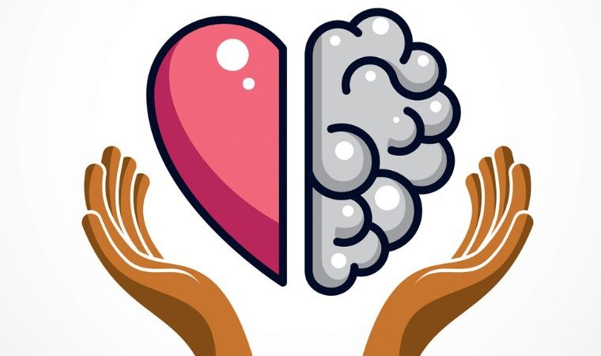

"Bem Estar Mental e Emocional

No contexto agitado e desafiador em que vivemos, saber como cuidar da saúde mental e emocional se tornou uma pauta cada vez mais relevante. Esses aspectos fundamentais da nossa saúde têm um impacto profundo em nossa qualidade de vida e bem-estar geral.
Portanto, compreender o que é saúde mental e emocional, identificar seus pilares e adotar práticas para preservá-las são passos fundamentais para uma vida equilibrada e saudável.
Entendendo a saúde mental e emocional
A saúde mental refere-se à nossa saúde psicológica e emocional, envolvendo como percebemos o mundo ao nosso redor, lidamos com o estresse, enfrentamos desafios e mantemos relacionamentos saudáveis.
É um equilíbrio delicado que influencia nossa capacidade de tomar decisões, enfrentar dificuldades e desfrutar dos momentos de alegria. A saúde emocional, por sua vez, é o reflexo da nossa habilidade para reconhecer, compreender e gerenciar nossos sentimentos.
É a capacidade de encontrar equilíbrio entre as emoções, permitindo-nos expressar alegria, tristeza, raiva ou calma de maneira saudável e construtiva. Ela não se trata apenas de estar sempre feliz, mas sim de compreender e aceitar uma gama diversificada de emoções como parte natural da experiência humana.
Contudo, é importante destacar que ambos os aspectos, saúde mental e emocional, são interdependentes. O estado emocional afeta a saúde mental e vice-versa, influenciando nossas decisões, comportamentos e percepções sobre o mundo ao nosso redor.
É fundamental reconhecer a importância de cuidar desses aspectos para alcançar um estado de equilíbrio e bem-estar holístico.
Pilares da saúde mental
Os pilares da saúde mental são os fundamentos que sustentam nosso bem-estar psicológico e emocional, promovendo uma vida equilibrada e satisfatória. Cada pilar desempenha um papel crucial na construção de uma base sólida para a saúde mental.
Entre os principais pilares da saúde mental, destacam-se:
Equilíbrio físico
O equilíbrio físico é a base para a saúde mental. Uma rotina de exercícios regulares e uma dieta equilibrada não só fortalecem o corpo, mas também têm impacto direto na saúde mental.
A atividade física libera endorfinas, promove o bem-estar emocional e melhora a clareza mental. Além disso, uma alimentação saudável fornece os nutrientes necessários para o funcionamento adequado do cérebro, contribuindo para a estabilidade emocional e mental.
Equilíbrio mental
Esse equilíbrio envolve a capacidade de gerenciar o estresse, manter o foco e lidar com os desafios do dia a dia. Isso inclui estratégias para preservar a saúde cognitiva, como a busca por aprendizado constante, desafios mentais e técnicas de relaxamento.
O equilíbrio mental também engloba a capacidade de estabelecer metas realistas, lidar com pressões externas e manter uma perspectiva positiva mesmo diante de situações adversas.
Equilíbrio emocional
O equilíbrio emocional refere-se à capacidade de reconhecer, compreender e regular as emoções. Envolve a aceitação de uma variedade de sentimentos, permitindo-se experimentar emoções sem reprimi-las ou ser dominado por elas.
Desenvolver a inteligência emocional, a habilidade de expressar e lidar com as emoções de maneira saudável, contribui para relacionamentos mais gratificantes e para uma vida emocionalmente estável.
Equilíbrio espiritual
O equilíbrio espiritual está bastante associado à saúde mental, indo além do aspecto religioso e envolve encontrar significado e propósito na vida. Esse equilíbrio é fundamental para uma sensação de completude e integração pessoal, fornecendo um senso de paz interior e suporte nos momentos desafiadores.
Como cuidar da saúde mental e emocional
Saber como cuidar da saúde mental e emocional é essencial. Essa consciência nos capacita a lidar melhor com os desafios do dia a dia, fortalecendo nossa capacidade de enfrentar situações estressantes e de tomar decisões de forma mais assertiva.
Por esse motivo, separamos algumas dicas importantes de como cuidar da saúde mental e emocional.
Cuide da sua saúde física
Lembre-se que a prática regular de atividades físicas libera endorfinas no cérebro, que atuam como analgésicos naturais e melhoram o humor. Além disso, uma dieta balanceada fornece os nutrientes necessários para o funcionamento adequado do cérebro, influenciando positivamente a saúde mental.
Foque em boas relações
Relacionamentos saudáveis oferecem apoio emocional, aumentam a sensação de segurança e pertencimento, reduzindo os níveis de estresse. Cultivar conexões significativas fortalece a saúde mental e emocional.
Valorize os momentos de lazer
Momentos de lazer e relaxamento são essenciais para recarregar as energias. Atividades prazerosas reduzem o estresse, promovem a criatividade e contribuem para um equilíbrio entre trabalho e descanso.
Reduza o tempo online
O excesso de tempo nas redes sociais pode gerar ansiedade e afetar negativamente a autoestima. Estabelecer limites no uso da tecnologia permite maior controle sobre o tempo dedicado a atividades mais benéficas para a saúde mental.
Dê prioridade ao sono
Uma boa qualidade de sono é essencial para o funcionamento adequado do cérebro e para a regulação das emoções. Manter uma rotina de sono regular e relaxante melhora o humor e a clareza mental.
Clique aqui para saber mais sobre saúde do sono!
Busque ajuda profissional
Não hesite em buscar orientação de um profissional de saúde mental se estiver enfrentando dificuldades emocionais. A terapia oferece um espaço seguro para explorar questões, aprender habilidades de enfrentamento e promover a saúde mental.
Ao aplicar essas práticas no dia a dia, é possível fortalecer a saúde mental e emocional, promovendo um equilíbrio duradouro e uma maior resiliência diante dos desafios da vida.
Clinicas como a Clinifemina estão disponíveis para oferecer suporte e assistência. Entre em contato para obter mais informações ou agendar uma consulta profissionais especializados.
Siga a Clinifemina nas redes sociais, estão no Instagram e no Facebook.